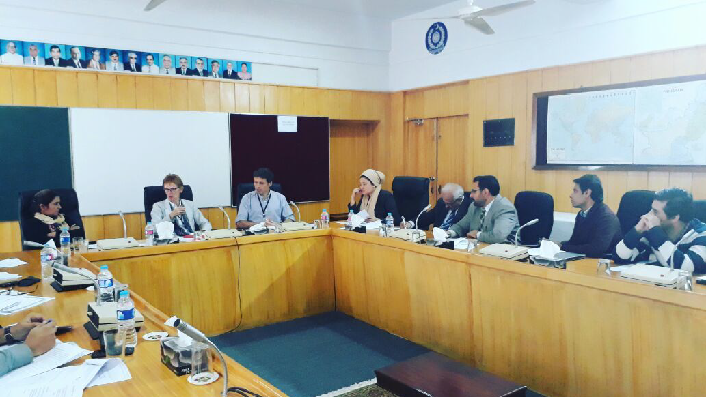
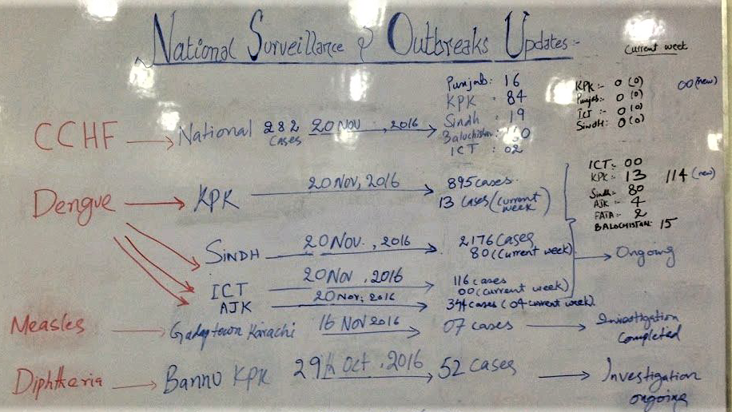

Strengthening IDSR in Pakistan: the importance of sustainable, secure and coordinated digital health technologies
Paul Cleary
Epidemiologist & SME for Infectious Disease Surveillance
UKHSA-Pakistan IHR Strengthening project
9 March 2022
Introduction
Today I am going to talk about:
- What "digital health" is and its potential applications
- The potential risks and benefits of digital health interventions
- Implementing a digital health intervention (DHIS 2) in Pakistan
- What we learned
- A forward look
Digital health
- Is a very broad term! (link↗)
- Meaning: any use of information and communications technologies (ICT) for improving health and/or well-being
- By individuals e.g. mobile apps (COVID-19), wearables
- By healthcare providers e.g. remote consultation, diagnosis, treatment, monitoring
- For health information management e.g. EHR, imaging, diagnostics, omics, big data
- Use of analytics (e.g. AI) or algorithms with health data
- Research & development
- Personalised medicine, robotics, IoT, virtual reality, e-learning, e-pharmacy and any other emerging digital trend you care to mention...
- Similar/overlapping terms: eHealth, mHealth, telehealth, telemedicine, health IT, health informatics
Digital health
- Potential benefits include:
- Improved self-management of non-communicable diseases
- Improved access to healthcare/universal health coverage
- Improved healthcare and health outcomes
- Public health
- Greater opportunities for health promotion and prevention
- Strengthened surveillance and outbreak response
- Lots of digital health "buzz", initiatives, reports, strategies, pilots
- Evidence base growing but...
"Yet, despite their potential, the myriad of digital health solutions often lack a clear strategy and purpose. Consequently, they struggle to progress beyond the pilot phase, to become financially viable and integrate into national health policies and systems." (link↗)
Digital health
Digital Health resolution passed by WHA in 2018
- "... urging Member States to prioritize the development and greater use of digital technologies in health as a means of promoting Universal Health Coverage and advancing the Sustainable Development Goals"
- "...to build capacity for rapid response to disease incidents and public health emergencies, leveraging the potential of digital information and communication technology to enable multidirectional communications, feedback loops and data-driven "adaptive management""
- "to develop, as appropriate, legislation and/or data protection policies around issues such as data access, sharing, consent, security, privacy, interoperability and inclusivity consistent with international human rights obligations"
Evidence base
Success factors for digital health interventions
- Leadership, governance, stakeholder/intersectoral collaboration
- Enabling public health/data protection legislation
- Sustainability (funding, technologies)
- Interoperability, standards, common identifiers
- Scalability
- Integration with existing systems/pilots, flows, linkages
- Information security and cybersecurity
- Connectivity (Internet, mobile/SMS, computers)
- Functionality of chosen platform
- User experience
- Workforce development (e.g. IT skills)
Principles for digital development
- Design with the user
- Understand the existing ecosystem
- Design for scale
- Build for sustainability
- Be data driven
- Use open standards, open data, open source and open innovation
- Reuse and improve
- Address privacy and security
- Be collaborative
(link↗)
Pakistan 2016

The situation
- Some existing infectious disease surveillance in Pakistan; fragmented across vertical programmes, military, provincial initiatives
- Previous DEWS system ended when WHO withdrew funding
- NIH Islamabad moving towards being a full national PH institute
- Unclear role of WHO at the time
- Devolution of health (but not IHR); divergence between provinces
- Lack of enabling public health legislation
- Most health care provided privately (some DH initiatives, e.g. pharmacy); no surveillance data shared
Pakistan 2016

The situation (cont.)
- Dependence on FELTP fellows
- Lack of infrastructure and equipment
- Limited information governance/security; previous major hacks
The tasks
- Re-establish basic surveillance processes in pilot districts of each province
- Establish "data flow" from pilot districts to provincial and federal level
- Harmonise data collection and strengthen information security
- Create timely surveillance outputs
- Link surveillance outputs to action
- Build capacity in local teams
A digital health intervention?
Requirements
- Sustainable - ideally open source (vs bespoke/commercial)
- Strong on data quality and information security
- Easy to use
- Key functionality including analytics and interoperability with other software
- Future-proof upgrade cycle
District Health Information System 2 (DHIS 2) (link↗)
DHIS 2
Strengths
- Open source: no licensing costs or restrictions on customisation
- Well documented; extensive training materials; easy to use
- Interoperability: use of standards (e.g. ADX data format), Application Programming Interface (API), Python/R integration
- Strong focus on cybersecurity and fine-grained permissions for users
- Highly scalable
- Flexible data collection, including mobile devices, SMS
- Extensive analytical functionality including GIS
- Enterprise-level database/data warehouse
- Developers can add new apps
Weaknesses
- Technical skills required
- Set up time (NB: WHO metadata)
- Not suitable for all purposes e.g. LIMS, ? EBS
Open source software
- Distributed, shared, open software development
- No purchase/licensing costs
- Note that a single user licence for commercial software may far exceed the average national wage in LMIC
- OSS not cost-free: still need to pay for hosting, IT staff, training
- "Digital public goods"
- 60% of the Web (and most email) runs on the open source Linux operating system
Next steps for DHIS 2
- Continue to scale up to further districts (training is a limiting step)
- Move towards more direct data entry by health facilities using app ? daily (exploring SMS gateways)
- Extend to capture other data
- Develop more complex deployments: disaster recovery; isolated instances for more sensitive data; respect devolution but avoid chaos
- Develop data linkage and centralised dashboard function and other outputs
Other next steps?
- Secure messaging and more focus on information security
- Laboratory information management and other pilots
- E-learning
- Event-based surveillance
What have we learned?
What have we learned?
Technology decision-making
- Assessment of needs, capabilities, connectivity etc is hard; scope creeps
- Sustainable software solutions: open source (under-used) vs. bespoke (over-used) vs. commercial (unaffordable)
- Interoperability, use of standards: important for future capability, but linkage is difficult
- Sustainable hosting: the cloud is cheap (but unclear data governance may hinder); hosting it yourselves requires kit, dependable power supply, people (+/-) IT training ...
- Metadata required for system configuration: master facility list (+ codes), denominator data, citizen ID system, GIS data
- Skills required for implementation team, e.g. Linux, networking, cybersecurity, Java, nginx, HTTPS/TLS, SSH, PostgreSQL, ufw, fail2ban, tripwire, SSH, virtualisation, Lynis, CloudFlare, Web development, system administration/shell scripting, (DHIS 2) - employ IT people!
Information governance/security and cybersecurity
- Lack of clear information governance may enable or hinder
- Much poor information security practice
- Default to basic principles (confidentiality, integrity, authenticity) or own organisational practices
- Key area to develop and strengthen, e.g. policy
Be lucky!
- Good colleagues and engaged IT
- TB program had done groundwork with DHIS 2 metadata
- CDC funded an entire data centre
- Bet on DHIS 2 came good
Look out for unexpected competition!
Role of UKHSA
- UKHSA has skills and expertise in most of the areas relevant to digital health
- Has lots to contribute to development of information solutions
- Should promote, contribute to and use open source software
Thanks for listening
paul.cleary@phe.gov.uk